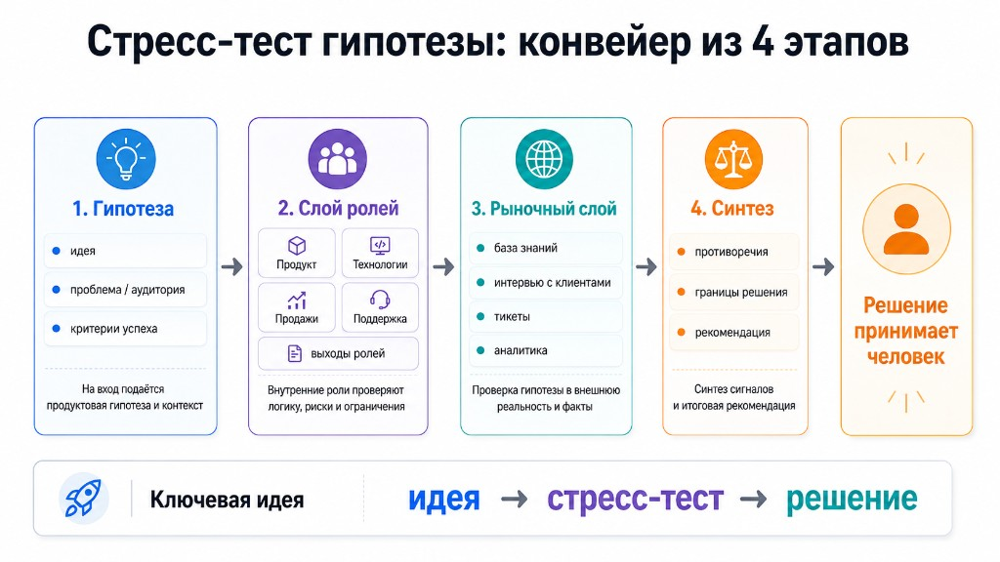
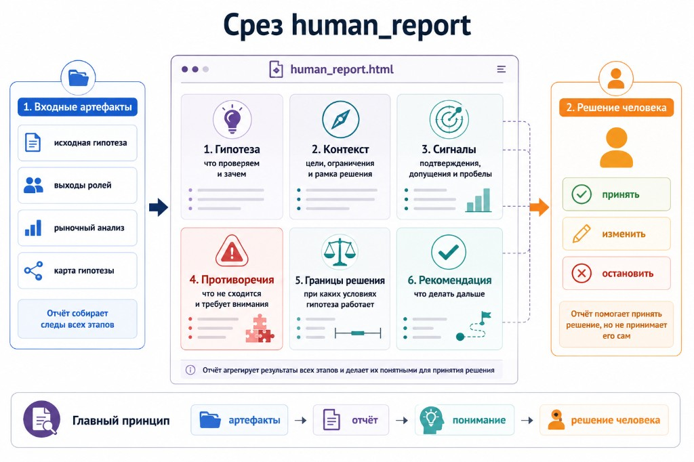

О чём этот доклад
Мы ускорили производство идей, но не научились так же быстро их останавливать
У продуктовых команд появилась необычная проблема. Раньше идеи было трудно собирать: нужно было провести встречу, найти исследования, поговорить с пользователями, добиться согласия между продуктом, разработкой и продажами. Теперь можно открыть LLM, описать рынок и аудиторию — и через минуту получить список фич, сегментов, офферов и вариантов стратегии.
С этим нет ничего плохого. Быстрое формулирование гипотез экономит время. Проблема начинается в следующий момент: хорошо написанная идея слишком легко начинает казаться хорошим решением.
У неё есть логика. Есть понятная боль. Есть знакомые слова — RAG, база знаний, аналитика, CustDev. Иногда есть даже ссылка на стратегию. И возникает естественное желание сказать: «Похоже разумно, давайте добавим в roadmap».
Сейчас узкое место — не в том, можем ли мы придумать следующую идею. Узкое место — можем ли мы достаточно рано понять, почему её, возможно, не нужно строить.
Это не призыв стать циничнее и перестать делать новое. Наоборот: хорошая продуктовая работа требует смело предлагать решения. Но между фразами «в этом есть смысл» и «на это стоит потратить квартал команды» должна быть дисциплина проверки.
Акт 1 · 2 минуты
Идеи стали дешёвыми. Уверенность — тоже.
Начать стоит не с технологии, а с ощущения, которое знакомо большинству людей в зале. После хорошей встречи, интервью или разговора с клиентом иногда кажется, что всё уже ясно. Проблема очевидна. Пользователь страдает. Решение почти просится в руки.
LLM усиливает этот эффект. Она умеет собрать множество разрозненных наблюдений в цельный текст. Это полезно, когда нужно быстро оформить мысль. Но связный текст не равен доказанному выводу. Модель может убедительно соединить боль пользователя, внутреннюю стратегию и желаемый эффект, хотя между ними пока нет подтверждённой причинной связи.
Здесь важно не утверждать, что команды наивны или что инструменты виноваты. Проблема тоньше. Чем больше у нас материалов, тем проще подобрать из них поддержку любимой идеи. Мы становимся не менее рациональными, а более уверенными в собственной рациональности.
Именно поэтому первый акт заканчивается вопросом, а не обещанием решения: стоит ли вообще реализовывать эту идею? Вопрос не про качество презентации и не про точность формулировки. Он про решение, которое команда примет после презентации.
Акт 2 · 3 минуты
Проблема не в том, что у нас мало информации. Проблема в том, как мы её смешиваем.
В этот момент обычно звучит возражение: «Но у нас уже есть RAG. Мы можем поднять документы, интервью, тикеты, аналитику и стратегию. Разве этого недостаточно?»
RAG действительно полезен. Он отвечает на важный вопрос: что уже известно и где это лежит? Он помогает находить источники и возвращать контекст в разговор. Но продуктовая гипотеза требует ответа на другой вопрос: что должно быть правдой, чтобы на эту идею стоило тратить деньги и время?
Это другой тип работы. Он требует не только найти документы, но и увидеть, что между ними не сходится.
Один широкий запрос легко смешивает несколько разных сущностей:
- пользовательскую боль и готовность покупателя платить;
- внутреннюю логику команды и рыночное подтверждение;
- стратегическую цель и причинный механизм, который к ней ведёт;
- факт из интервью и предположение, которое мы добавили сами.
На выходе часто получается аккуратный вывод: «Есть риски, но в целом идея перспективна». Для продукта это опасная фраза. Она сглаживает именно те различия, которые определяют, нужно ли вообще строить решение.
Акт 3 · 4 минуты
Нужна не ещё одна модель, а другая архитектура работы с гипотезой
Если один большой промпт смешивает роли, факты и ожидания, то проверка должна быть устроена иначе. Не как фабрика идей и не как машина автоматического решения. Скорее как стресс-тест: мы не пытаемся доказать, что идея хорошая, а ищем условия, при которых она перестаёт выдерживать проверку.
Это важно назвать честно. В текущей реализации нет автономной мультиагентной системы, где несколько сущностей сами спорят и принимают решение. Есть Cline как среда исполнения, rules, skills и workflows. Они дисциплинируют последовательность работы и сохраняют проверяемые артефакты. Решение остаётся за продуктовой командой.
Первый шаг: разделить точки зрения
Пользователь может хотеть быстрее решать задачу. Руководитель команды — меньше отвлечений. Владелец продукта — более понятную экономику. Покупатель — контроль и предсказуемость. Техписатель или поддержка — не получить поток новых проблем после запуска.
Пока эти интересы живут в одном абзаце, они выглядят как «общее мнение». Когда их раскладывают отдельно, становятся видны конфликты. И это полезно: спор не тормозит решение, а показывает, что именно надо проверить.
Второй шаг: найти evidence
Следующий вопрос звучит просто: на что здесь есть источник? Интервью, записи из базы знаний, аналитика, стратегия, рынок — все они могут быть evidence. Но у каждого источника свой вес. Если нет источника, вывод остаётся гипотезой, даже когда он сформулирован очень убедительно.
Третий шаг: столкнуть сигналы
Обычный анализ часто стремится к консенсусу. Стресс-тест делает обратное: удерживает противоречие в явном виде. Скорость против доверия. Боль пользователя против мотива покупателя. Внутренняя логика против рыночной реальности. Это не «риски в конце презентации», а материал для решения.
Четвёртый шаг: сформировать следующий шаг
Выходом не обязан быть backlog. Иногда правильный результат — продолжить. Иногда — сузить идею. Иногда — провести три интервью. Иногда — отказаться до того, как команда вложила квартал разработки. Хороший процесс не обещает, что все идеи выживут. Он обещает, что у команды будет меньше дорогих иллюзий.

Существующая схема из репозитория. Для сцены это главный визуальный якорь: четыре этапа вместо технических деталей восьми слоёв.
Демо · 10 минут
Понятный кейс: AI-поиск по корпоративной Wiki
Теперь теория должна исчезнуть и уступить место ситуации, которую зал узнаёт без дополнительных объяснений. В компании есть Wiki или база знаний. Документов много. Люди всё равно задают вопросы в чат. Кажется, что решение очевидно: добавить AI-поиск, и сотрудники будут быстрее находить информацию, меньше спрашивать коллег и быстрее выполнять задачи.
Если добавить в корпоративную базу знаний поиск с помощью искусственного интеллекта, сотрудники будут быстрее находить нужную информацию, реже обращаться к коллегам с вопросами и смогут быстрее выполнять рабочие задачи.
Это хорошая гипотеза для начала демо, потому что она не выглядит нелепой. Она выглядит именно так, как выглядят реальные идеи в backlog: разумно, полезно, почти готово к реализации.
Что подтверждается
Боль поиска реальна. В Wiki могут быть внутренние аббревиатуры, старые процессы, несколько версий одного документа. Люди действительно тратят время на поиск. Это не нужно отрицать, чтобы провести стресс-тест честно.
Что не подтверждается автоматически
Но отсюда ещё не следует, что AI-поиск уменьшит число вопросов коллегам. Вопрос в чате бывает не поиском факта. Человеку может понадобиться контекст: действует ли инструкция сейчас, кого спросить, какой вариант подходит именно этой команде. Если база устарела, уверенный AI-ответ способен не уменьшить, а увеличить число проблем.
Где меняется решение
Здесь появляется второй участник истории — покупатель. Пользователь хочет быстрый ответ. Владелец базы знаний или руководитель IT думает иначе: ссылки на источники, актуальность страницы, доступы, журнал запросов, согласование с ИБ. Для него «умный чат по всем документам» может быть не преимуществом, а источником риска.
Исходная идея не умирает. Она меняет форму. Вместо обещания «меньше вопросов и быстрее работа» появляется поиск-помощник: он ведёт к источнику, показывает свежесть, не скрывает сомнительное и создаёт обратную связь для техписателей.
Именно этот момент стоит показать в `human_report.html`: не весь конвейер, не настройки Cline и не набор файлов. Покажите сначала digest, затем блок бизнес-ценности, «Что изменилось?», противоречия и план валидации. Зритель должен увидеть, что отчёт не маскирует неопределённость, а делает её пригодной для действия.

Схема поможет подготовить резервный вариант демо: если live-отчёт не откроется, показывайте его ключевые секции в том же порядке.
Закрепление · 3 минуты
На демо мы только что увидели три типичные ошибки одного хорошего промпта
Не нужно открывать новый теоретический раздел после демо. Нужно назвать то, что зал уже наблюдал. Тогда три ошибки станут не списком из методологии, а простыми именами для реальных ловушек.
1. Логика = доказательство
«Люди долго ищут документы, значит они меньше будут писать коллегам и быстрее делать задачи» — связная логика, но не подтверждённый факт.
2. Сглаживание противоречий
Быстрый ответ хорош для пользователя. Но доверие, свежесть данных и доступы критичны для покупателя. Это не фоновые риски, а разные требования к продукту.
3. Строить вместо валидации
Самый удобный ответ LLM — предложить MVP и roadmap. Более честный ответ — определить дешёвую проверку до разработки.
Важная интонация: LLM не «ошибается» в бытовом смысле. Она делает то, что от неё попросили: строит правдоподобный текст. Ошибка возникает, когда команда принимает правдоподобие за достаточное основание для решения.
Практика подготовки
Каркас слайдов: что аудитория должна почувствовать на каждом шаге
Слайды не должны дублировать эту статью. Их задача — удерживать поворот истории. Текст оставьте себе как опору для репетиции; на экране показывайте только вопрос, конфликт, схему или вывод.
| Слайд | Что показывает | Что должен понять зал | Реплика-переход |
|---|---|---|---|
| 1. Зацепка | «Идей стало легко много» | Проблема — не отсутствие идей | «Но почему при всех наших инструментах мы всё ещё строим не то?» |
| 2. Ложная уверенность | RAG, KB, CustDev, документы → неправильный backlog | Информация не равна решению | «Проблема не в RAG; проблема — в ожидании, что он сам примет решение» |
| 3. Принцип | Идея → стресс-тест → решение | Гипотезы нужно нагружать, а не защищать | «Для этого нужен не один ответ, а другая последовательность работы» |
| 4. Четыре этапа | POV → evidence → столкновение → следующий шаг | Метод понятен без технических деталей | «Покажу, что происходит с обычной, очень разумной гипотезой» |
| 5. Wiki-гипотеза | AI-поиск → меньше вопросов → быстрее задачи | Гипотеза кажется очевидной | «Кто поставил бы это в backlog?» |
| 6–9. Демо отчёта | Digest, бизнес, изменения, противоречия, валидация | Стресс-тест меняет решение, а не украшает его | «Выход — не PRD. Выход — следующий дешёвый шаг» |
| 10. Три ошибки | Логика, сглаживание, преждевременная разработка | Это общий паттерн, а не особенность Wiki | «Вот что можно заметить и в следующей гипотезе вашей команды» |
| 11. Законы | Семь принципов, три голосом | Метод можно применять без репозитория | «Оставлю вам три правила, которые можно взять в ближайшую продуктовую встречу» |
| 12. Финал | Вопрос о раннем отказе | Ценность AI — снижение неопределённости | Финальная фраза без дополнительного объяснения |
Репетиция
Что особенно важно не потерять в подаче
- Не превращать доклад в обзор репозитория. Rules, skills, workflows и артефакты нужны лишь постольку, поскольку они удерживают дисциплину проверки.
- Не атаковать RAG. Он полезен. Недостаточным его делает не технология, а ожидание, что найденные документы автоматически дают продуктовое решение.
- Не выдавать систему за автономных агентов. Честная формулировка сильнее: это управляемый AI-конвейер, который помогает команде не пропустить важные вопросы.
- Не пытаться доказать, что Wiki-кейс уже решён. Его сила в другом: он показывает, как гипотеза становится точнее, а решение — дешевле и безопаснее.
- Не спешить на вопросе залу. Вопрос «кто поставил бы это в backlog?» нужен, чтобы аудитория сначала признала гипотезу разумной, а потом увидела, где эта разумность недостаточна.
- Не прятать слово «не строить». Это не поражение продукта. Это экономия времени, денег и доверия команды.
Финал · 1 минута
Главное, что нужно оставить аудитории
Когда у вас есть RAG, база знаний, CustDev и сильная LLM, вопрос уже не в том, можете ли вы придумать хорошую идею. Вопрос в том, можете ли вы достаточно рано понять, что её не надо строить.
AI ценен, когда снижает неопределённость, а не когда пишет красивый текст. Репозиторий опционально; дисциплина проверки — нет.